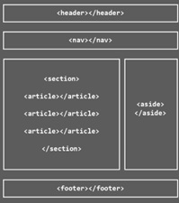

Etiquetas semánticas: Perteneciente o relativo a la significación de las palabras. Este tipo de etiquetas del lenguaje HTML son aquellas que dan un significado a las partes del documento. Las etiquetas semánticas indican qué es el contenido que contienen, en lugar de como se debe formatear al mostrar el documento HTML. Estas etiquetas, tienen importancia en el marco del HTML y de la composición de un documento web para ayudar a los motores de búsqueda como Google a indexar más correctamente los contenidos de un sitio. Dentro del etiquetado semántico también tenemos varias funciones, pero las principales y elementales son las que sirven para definir el esquema principal del documento, como HEADER, ARTICLE, FOOTER, etc. Generalmente, en cualquier documento tenemos una cabecera, un cuerpo y un pie de página, elementos que definen la estructura. Todas esas etiquetas semánticas nos indican qué es el contenido que engloban y cuál es su relación con el conjunto de elementos del documento HTML.
según Celaya Luna 6 de octubre de 2022 última actualización Las etiquetas semánticas no tienen un estilo predeterminado que el navegador nos vaya a asignar. Es decir, porque HEADER signifique que es una cabecera, el navegador no va en ningún caso a posicionar el elemento en la parte de arriba del documento. Lo mismo con FOOTER, que no lo colocará en la parte de abajo, o ASIDE al lateral. Nosotros mediante CSS, debemos asignar los estilos que queramos se aplique a cada uno de esos elementos del documento HTML. Crea un enlace a otras páginas de internet, archivos o ubicaciones dentro de la misma página, direcciones de correo, o cualquier otra URL. Ejemplo: Una de las principales características de CSS es su flexibilidad y las diferentes opciones que ofrece para realizar una misma tarea. De hecho, existen tres opciones para incluir CSS en un documento HTML